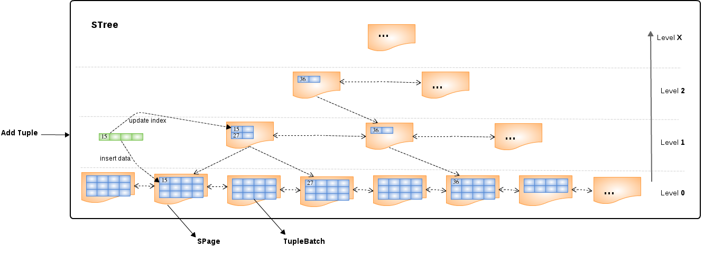

ElementSymbol id = new ElementSymbol("id", new GroupSymbol("Users"), String.class);
ElementSymbol name = new ElementSymbol("name", new GroupSymbol("Users"), String.class);
ElementSymbol phone = new ElementSymbol("phone", new GroupSymbol("Users"), String.class);
ElementSymbol address = new ElementSymbol("address", new GroupSymbol("Users"), String.class);
ElementSymbol country = new ElementSymbol("country", new GroupSymbol("Users"), String.class);
List<ElementSymbol> elements = Arrays.asList(id, name, phone, address, country);
BufferManager bm = BBuffer.Factory.builder().bufferDir("target/buffer").build();
STree tree = bm.createSTree(elements, "Users", 2);
int size = 1 << 7;
int logSize = tree.getExpectedHeight(size);
for(int i = 1 ; i <= size ; i ++) {
tree.insert(Arrays.asList("" + i, "name-" + i, "123456789", "Beijing", "CN"), InsertMode.NEW, logSize);
}
TupleSource source = tree.getTupleSource(false);
List<?> tuple = null;
while((tuple = source.nextTuple()) != null) {
...
}STree

-
A
STreeis a Skip List based self balancing search tree, has similar performance to a B+ Tree, but with fewer updates. -
All tuples be kept in Level 0 per page with a ascending order, the level ahead of Level 0 use to keep all indexs(subelements of a tuple).
-
Each pages in a
STreealways linked with prev page and next page dually. -
The Page kept the index also has a children list point to pages in its ancestor list.
-
A
STreehas a keyManager, a leafManager and a lobManager, keyManager used to form indexs and add it to Buffer, the leafManager used to form tuples in Level 0 to TupleBatch and add it to Buffer, the LobManager used to pruge the Blob/Clob/Object column to FileStore directly. -
A
STreesupport Insert/Update/Select/Delete against tuple. -
A
STreecan create a TupleSource, which the tuples can be get iteratively.
| Name | Discription |
|---|---|
rowCount |
How many rows existed in a |
pageSize |
How many pages existed in a |
leafSize |
How many leafs be allowed in a tree node |
keyLength |